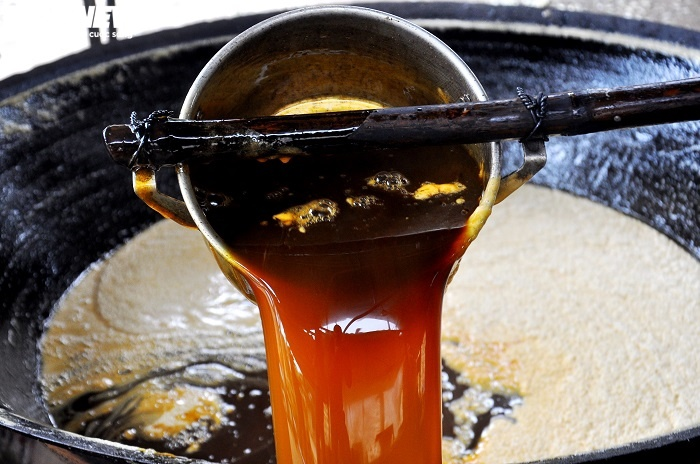
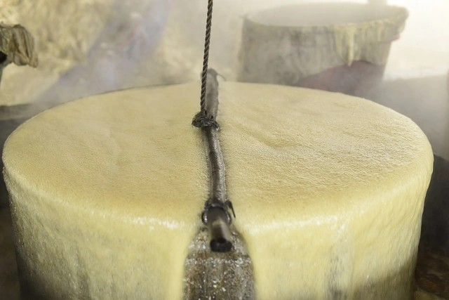
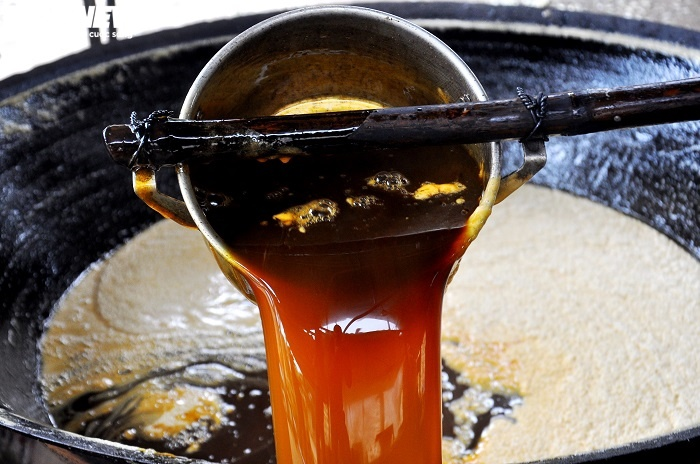
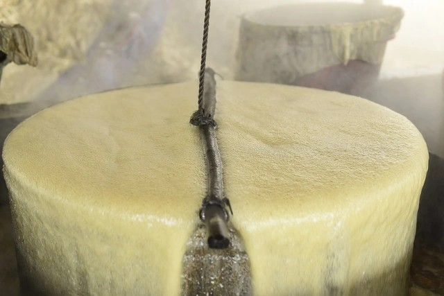
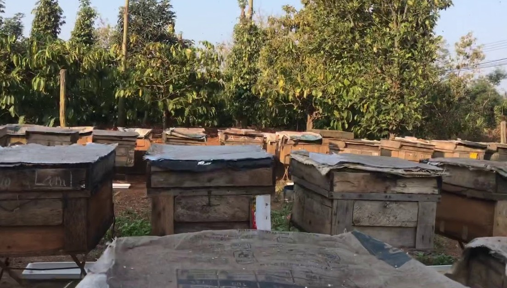
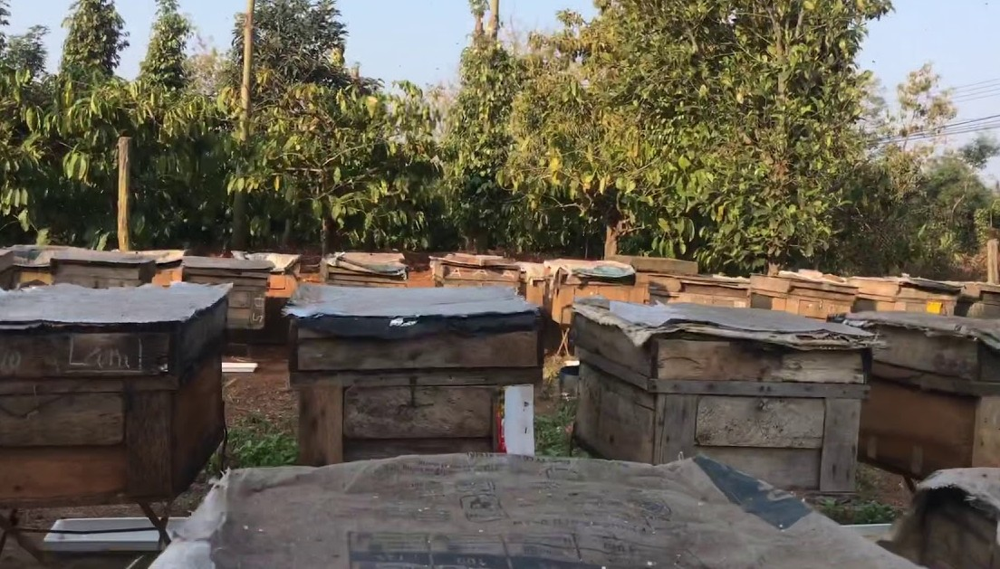

 

Giới thiệu
Mật là món quà tuyệt vời mà thiên nhiên ban tặng, được con người khai thác và sử dụng từ hàng ngàn năm qua. Được biết đến với hương vị ngọt ngào và giá trị dinh dưỡng cao, mật không chỉ là thực phẩm bổ sung năng lượng mà còn là nguyên liệu quý trong chế biến ẩm thực và chăm sóc sức khỏe.
Mật ong là loại mật phổ biến nhất, được ong tạo ra từ mật hoa tự nhiên. Với thành phần giàu vitamin, khoáng chất, và các chất chống oxy hóa, mật ong được xem như một "thần dược" tự nhiên hỗ trợ tăng cường hệ miễn dịch, làm đẹp da, và chữa lành vết thương. Không chỉ vậy, hương vị ngọt thanh và hương thơm đặc trưng của mật ong còn làm tăng thêm sự hấp dẫn cho các món ăn và thức uống.
Bên cạnh mật ong, mật mía – sản phẩm truyền thống từ nước mía nguyên chất – cũng rất được ưa chuộng. Mật mía mang vị ngọt đậm đà, màu sắc nâu sẫm đặc trưng và thường được sử dụng trong các món ăn dân dã hoặc làm nước chấm, bánh trái. Mật mía không chỉ cung cấp năng lượng mà còn giữ được một số dưỡng chất từ cây mía, mang lại giá trị dinh dưỡng đáng kể.
Các loại mật khác, như mật từ cây thốt nốt hay mật từ một số loài hoa rừng, cũng có những đặc trưng riêng biệt về hương vị và giá trị. Điểm chung của các loại mật này là sự tự nhiên, lành tính và khả năng ứng dụng đa dạng trong đời sống hàng ngày, từ làm đẹp, chăm sóc sức khỏe đến ẩm thực. Với sự phong phú về chủng loại và nguồn gốc, mật đã trở thành một phần không thể thiếu trong văn hóa và đời sống của con người, mang đến sự ngọt ngào, bổ dưỡng và gần gũi với thiên nhiên.
Sản phẩm
Dưới đây là một số sản phẩm mật tự nhiên mà chúng tôi cung cấp
Mật ong tây bắc
Giá: 500k
Mật ong nuôi
Giá: 700k

Mật nhân tạo
Giá: 300k